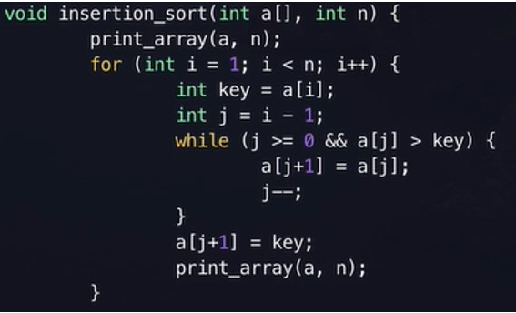
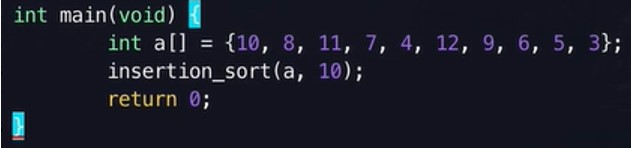
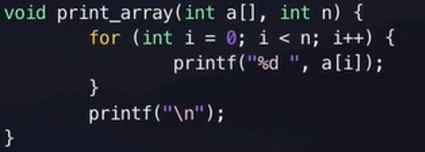
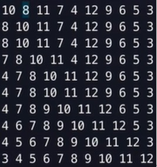

Insection Sort
The performance of insertion sort is well among other elementary sorting algorithms. Let n be a set of numbers, both the worst case and the average case time of insertion sort are O(n^2). (Ganapathi & Chowdhury, 2021)
The way of insertion sort performs is like this. The first item needs no action, the second item will be compared to the first item, it will check whether is larger or smaller than the first item. When it is larger than the first item, it will stay after the first item, if not, it will be inserted to the place before the first item. When the third item is input, it will first compare to the largest item, if it is larger than that, it will stay in the last, if not, it will be compared to the second largest item, if it is larger, it will be inserted after the second largest item, if not, it will be compared to the smallest item, if it is larger, it will be inserted after the smallest item, if not, it will be inserted before the smallest item. If there are n numbers are sorted in ascending order, the new number will first compare to the n^th item first, then the n-1^th, then the n-2^th item, then the n-3^th items until it found an item larger than the inserted data.
For example, there is a set of data [10, 8, 11, 7, 4, 12, 9, 6, 5, 3]
The first step is input 10 and no further action will be taken. [10]
The second step is comparing 8 and 10, as 8 < 10, 8 will be inserted before 10. [8, 10]
The third step is comparing 11 and 10, as 11 < 10, it will be placed at the last [8, 10, 11]
The fourth step is comparing 7 and 11, 7 < 11, so 7 will be compared to 10, 7 < 10, then 7 will be compared to 8, 7 < 8, 7 will be inserted before 8. [7, 8, 10, 11]
After all the steps, the final list will become [3, 4, 5, 6, 7, 8, 9, 10, 11, 12]

The above code is written in C interpreter performing insertion sort function.
In line 1, the function insertion_sort is created, a[] is the set of data, n is the length or the number of item in the set of data.
In line 2, the data input is printed.
In line 3, for loop is created, i = 1 but not 0, as the first item input needs no further action taken, so it can be started by 1. i represents the new item that started to compare with the existing sorted set of data. When is smaller than the length of set, the loop continues, after the loop is done once, i will be increased by 1. When i = n, that means all the items are compared and sorted well.
In line 4, the int key is defined, a[i] is the item that we want to compare with the set of data.
In line 5, the int j is defined as the item before the item that is under the process of comparison. (As the item need to be compared to the item before it)
In line 6, a while loop is created, the condition is while j >= 0, which means when there is an item before the item need comparison. The second condition is while a[j] > key, which means the items before the unsorted item is larger than the unsorted item. The loop only continues when both conditions are satisfied.
In line 7, when the conditions are satisfied, the item which is larger than the unsorted item but it stay before the unsorted item will be moved one place after, which means after the unsorted item.
In line 8, when the move completed, the unsorted item need to be compared with the item before it, so j need to minus 1.
In line 10, we have to put the key in the correct place (order), a[j+1] is because the j -- in the previous line.
In line 11, we print out the set of data.
>

So we input a set of data [10, 8, 11, 7, 4, 12, 9, 6, 5, 3] and the length is 10, and execute the insertion_sort function defined before.

And this is the code for printing out the data during sorting. When the above codes are executed

Reference:Ganapathi, P., & Chowdhury, R. (2021). Parallel Divide-and-Conquer Algorithms for Bubble Sort, Selection Sort and Insertion Sort. The Computer Journal. https://doi.org/10.1093/comjnl/bxab107